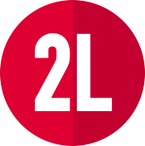

<!-------------- Navbar --------------->
<div class="toolbar" role="banner">
    <div style="cursor: pointer;" routerLink="/home">
        
        <span>C.R.U.D.</span>
    </div>
    <div class="spacer"></div>
    <a class="fs-4 text-light" data-bs-toggle="offcanvas" href="#offcanvasExample" role="button"
        aria-controls="offcanvasExample">
    </a>
    <a aria-label="Github" title="Git Repo" class="text-center me-4" href="https://github.com/LuisLopezCol/CRUD"
        target="_blank">
        <i class="fab fa-codepen text-light fs-4 links"></i>
        <p class="text-light fw-normal m-0 " style="cursor: pointer;">LUIS LOPEZ</p>
    </a>
</div>